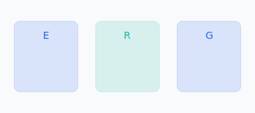
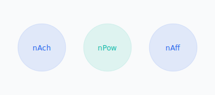

Fundamenty — Klasyczne teorie
Maslow — hierarchia potrzeb

Fizjologiczne: jedzenie, woda, sen.
Bezpieczeństwo: stabilność, zdrowie, zasady.
Przynależność: relacje, kultura zespołu.
Uznanie: nagrody, status, osiągnięcia.
Samorealizacja: potencjał, rozwój, kreatywność.
Maslow w praktyce sprzedażowej
Samorealizacja: szkolenia, certyfikacje, innowacje, autonomia.
Uznanie: nagrody, feedback, awanse, pochwały.
Przynależność: kultura, współpraca, integracje.
Bezpieczeństwo: stabilność, przejrzyste wynagrodzenia, ubezpieczenia.
Krytyka: sztywna hierarchia, różnice kulturowe, jednoczesność potrzeb → stosować elastycznie.
Alderfer — ERG
E — Egzystencja: wynagrodzenie, warunki, bezpieczeństwo.
R — Relacje: więzi, akceptacja, uznanie.
G — Wzrost: rozwój, kreatywność, mistrzostwo.
Zasada frustracji–regresji: blokada G → większy nacisk na E/R; potrzeby realizowane równocześnie.
ERG w sprzedaży: przykłady
- Nowy sprzedawca: fokus na R (mentoring) i E (stabilność, prowizje) → później G.
- Top performer wypalony: regres do R (rola mentora) lub E (pakiet, benefity).
- Zespół w kryzysie: najpierw E (stabilność), potem R, na końcu G (cele, rozwój).
Herzberg — teoria dwuczynnikowa

Higiena: polityki, warunki, płaca, relacje, bezpieczeństwo.
Motywatory: osiągnięcia, uznanie, odpowiedzialność, rozwój.
Wdrożenie
- Krok 1 — Audit higieny: wynagrodzenie, warunki, zasady, relacje, stabilność, oceny.
- Krok 2 — Motywatory: cele, docenianie, autonomia, szkolenia, awans, projekty.
McClelland — trzy potrzeby
nAch: cele, feedback, umiarkowana trudność, innowacyjność.
nPow: wpływ, decyzje, prestiż, rola lidera.
nAff: relacje, współpraca, harmonia, obsługa klienta.
Dopasowanie ról w sprzedaży
| Profil | Rola | Motywatory |
|---|---|---|
| nAch | Hunter, kluczowi klienci | Trudne cele, prowizje, rankingi |
| nPow | Team leader, kierownik regionu | Autonomia, budżet, zespół |
| nAff | Account manager, obsługa | Relacje, integracje, współpraca |
Porównanie teorii treści
| Aspekt | Maslow | ERG | Herzberg | McClelland |
|---|---|---|---|---|
| Liczba kategorii | 5 | 3 | 2 | 3 |
| Hierarchia | Sztywna | Elastyczna | Brak | Brak |
| Klucz | Samorealizacja | Frustracja–regresja | Higiena vs motywatory | Wyuczone potrzeby |
| Zastosowanie | Środowisko pracy | Elastyczna motywacja | Najpierw higiena | Dopasowanie ról |